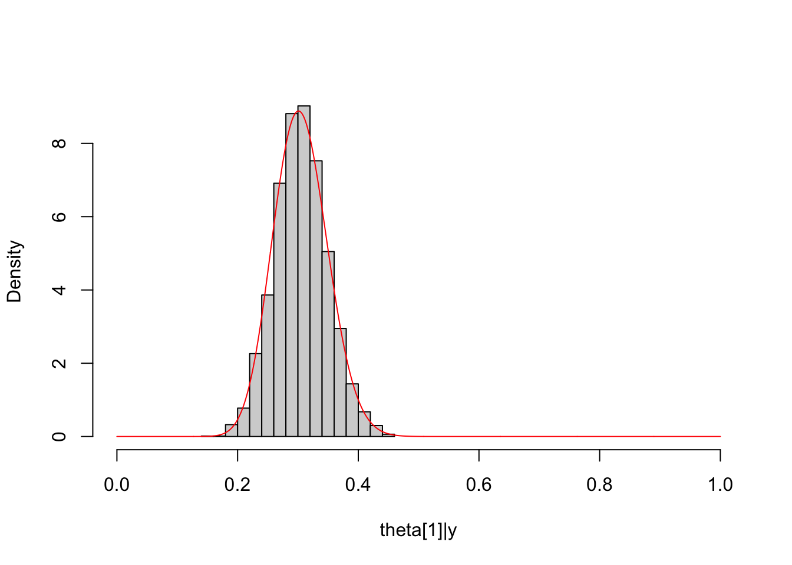
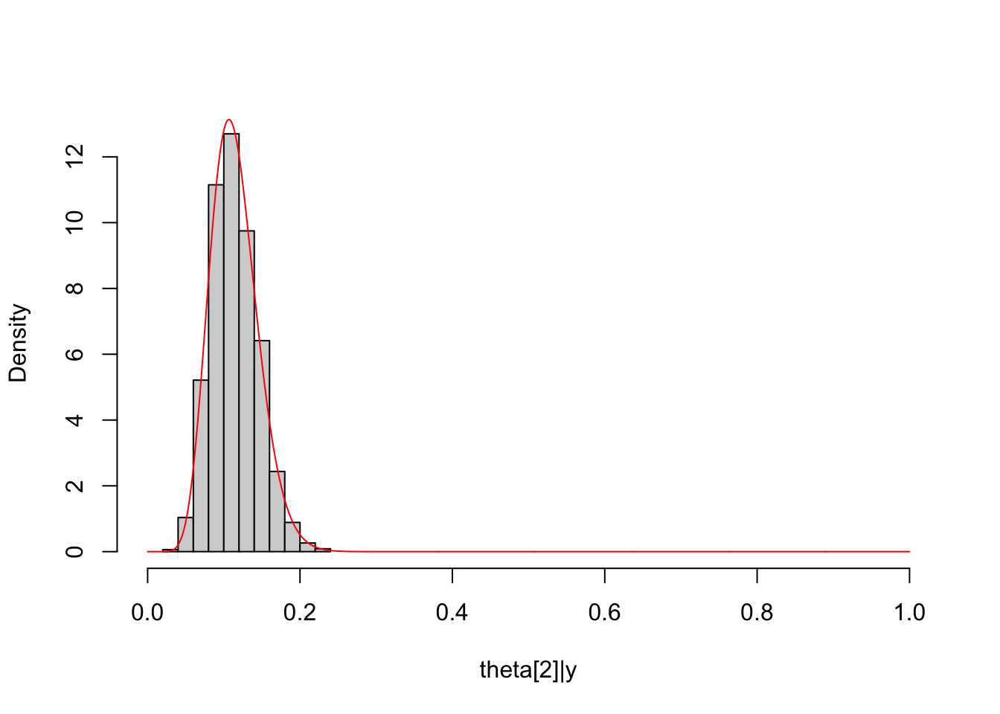
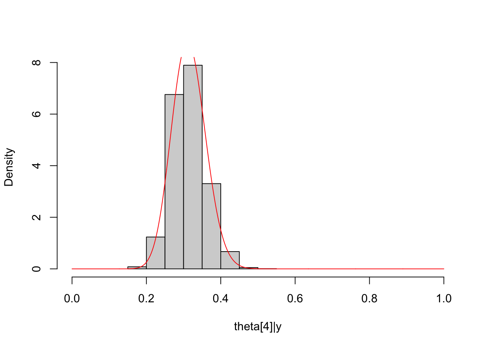
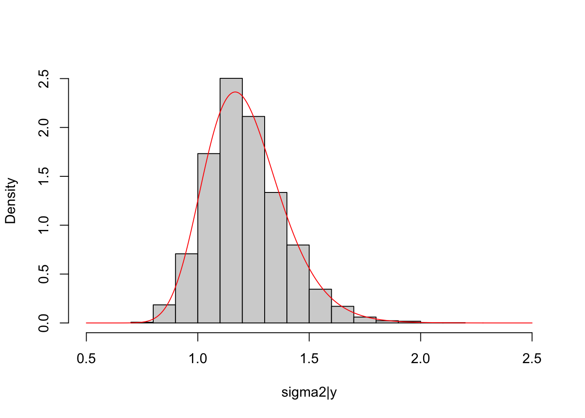
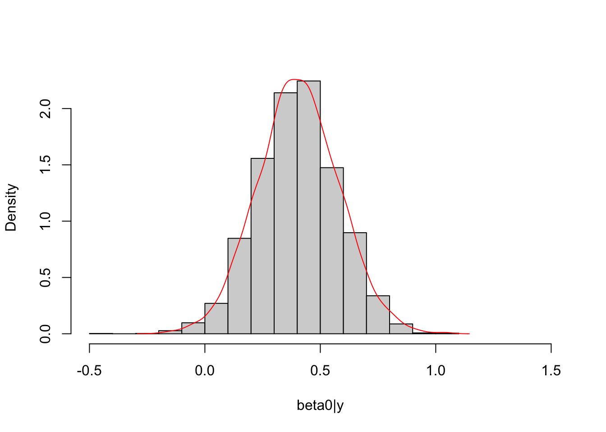
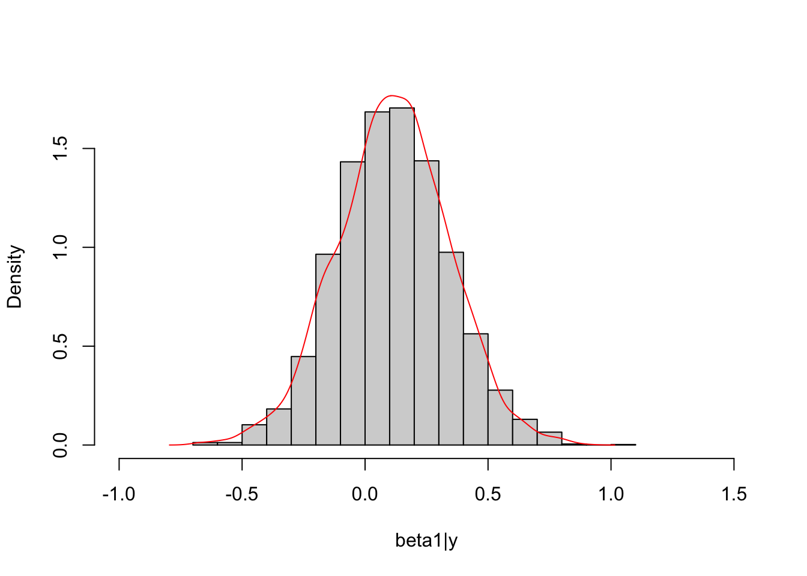

Code
# specify prior and data generation mechanism
## hyperparameters
alpha = 1
beta = 1 ### thus an uninformative prior
##
theta = 0.45
n = 100
set.seed(0808)
y = rbinom(n, 1, prob = theta)Kaixing Liu
August 8, 2024
Under the Bayesian paradigm, the statistical inference is conducted on the posterior distribution of parameters or the posterior predictive distribution of outcomes depending on the quantity of interest. In most cases, the posterior distributions are complex and known up to a constant factor (unknown) at best. It is Markov Chain Monte Carlo (MCMC) that makes the posterior estimation/inference doable and easier via simulating draws from the posterior distribution.
Today, how MCMC works is not the focus. Instead, I will use several examples to illustrate conducting Bayesian inference with Stan (based on Hamiltonian MCMC) in R.
First of all, we should install rstan package, the R interface to Stan, and the tools for compilation of C++ code in our computer. (Refer to Stan official guide for details.)
\[ \theta \sim \text{Beta}(\alpha,\beta) \]
\[ Y|\theta \sim \text{Bernoulli}(\theta) \] Observed data, \(\{y_1,y_2,...,y_n\}\) (iid).
\[ p(\theta|\boldsymbol{y})\propto p(\boldsymbol{y}|\theta)\pi(\theta)\propto \theta^{\sum_i y_i}(1-\theta)^{n-\sum_i y_i}\theta^{\alpha-1}(1-\theta)^{\beta-1} \]
Therefore,
\[ \theta|\boldsymbol{y}\sim \text{Beta}(\alpha+\sum_i y_i,\beta+n-\sum_i y_i) \]
This posterior distribution is a well-known distribution and we don’t bother to use Stan; it is chosen mainly to have theoretical results to compare with those obtained from Stan.
Before we call Stan in R, we need to create a .stan file (easy to do in Rstudio) written in Stan language, pretty straightforward and concise. (Stan Reference Manual for language details)
data { // Y is the observation vector with N observations
int<lower=0> N;
array[N] int Y;
}
parameters { // theta is bounded between 0 and 1
real<lower=0, upper=1> theta;
}
model {
theta ~ beta(1, 1); // specify prior distribution
for(n in 1:N){
Y[n] ~ binomial(1, theta); // specify model for data
}
}Now we can load rstan package and call stan function to simulate a posterior sample. (For this example, executable Stan code is inserted to output a stanmodel for sampling function as input. If we create a separate .stan file in the same directory, use stan function.)
library(rstan)
options(mc.cores = parallel::detectCores()) # parallel computing, one chain per core
rstan_options(auto_write = TRUE) # only need one time of compilation of C++ code
dat = list(N=n, Y=y) # consistent with data block in .stan file
beta_binomial_fit = sampling(beta_binomial_model, data = dat, algorithm="HMC")Initial points (values) for MCMC are likely to influence the time it takes for the chains to reach the stationary distribution (target posterior distribution). Thus, draws during sampling period (default, 1001-2000) of each chain (default, 4 chains) are collapsed together to form a final posterior sample.
The match between the histogram of the sample and the theoretical density curve of the posterior distribution is satisfactory.
\[ \mu\sim N(\mu_0, \sigma_0^2) \]
\[ Y|\mu,\sigma^2\sim N(\mu, \sigma^2) \]
\[ p(\mu|\boldsymbol y)\propto \exp(-\frac{(\mu-\mu_0)^2}{2\cdot \sigma_0^2})\exp(-\frac{\sum_i (y_i-\mu)^2}{2\cdot \sigma^2}) \]
Therefore,
\[ \mu|\boldsymbol {y}\sim N(\frac{\frac{1}{\sigma_0^2}\mu_0+\frac{n}{\sigma^2}\bar y}{\frac{1}{\sigma_0^2}+\frac{n}{\sigma^2}},\frac{\sigma_0^2\sigma^2}{n\sigma_0^2+\sigma^2}) \]
(Refer to this for functions defined in Stan)
# MCMC and plot
normal_normal_fit = sampling(normal_normal_model, data = dat_normal, iter=2000, chains=4)
mu_post = extract(normal_normal_fit, permuted=T)$mu
hist(mu_post, freq = F, main = NULL,
xlab = "mu|y", xlim=c(-1,4))
lines(seq(-1, 4, length.out = 1000), dnorm(seq(-1, 4, length.out = 1000),
mean = (mu_0/sigma_0^2+sum(y_normal)/5^2)/(n/5^2+1/sigma_0^2),
sd = sqrt(5^2*sigma_0^2/(n*sigma_0^2+5^2))),
col="red")This is the multivariate-extension of beta-binomial model.
\[ (\theta_1,\theta_2,...,\theta_K)\sim \text{Dir}(\alpha_1,\alpha_2,...,\alpha_K),\ \text{where} \sum_k \theta_k=1\ \text{and}\ \theta_k\geq 0\ \forall k \]
\[ (Y_1,Y_2,...,Y_K)\sim \text{Multinomial}(n,\boldsymbol {\theta}),\ \text{where} \sum_i Y_i=n \]
\[ p(\boldsymbol{\theta}|\boldsymbol{y})\propto \Pi_k \theta_k^{y_k}\Pi_k \theta_k^{\alpha_k-1} \]
Therefore,
\[ \boldsymbol{\theta}|\boldsymbol{y}\sim \text{Dir}(\alpha_1',\alpha_2',...,\alpha_K'), \text{where}\ \alpha_k'=\alpha_k+y_k\ \forall k \]
It can be shown that the marginal distribution of a Dirichlet distribution is a beta distribution, for example, \(\theta_1|\boldsymbol {y}\sim \text{Beta}(\alpha_1',\sum_k\alpha_k'-\alpha_1')\).
Here, we consider \(5\) categories and a uniform prior with \(\alpha_k=1\ \forall k\).
# MCMC and plot
dat_multinomial = list(K=5, Y=y_multinomial)
dirichlet_multinomial_fit = sampling(dirichlet_multinomial_model,
data = dat_multinomial)
##
Theta1_post = unlist(extract(dirichlet_multinomial_fit, pars="Theta[1]",
permuted = T))
hist(Theta1_post, freq = F, main = NULL, xlim = c(0,1),
xlab = "theta[1]|y")
lines(seq(0, 1, length.out = 1000), dbeta(seq(0, 1, length.out = 1000),
shape1 = Alpha["alpha1"]+y_multinomial[1],
shape2 = sum(Alpha[-1]+y_multinomial[-1])),
col="red")
##
Theta2_post = unlist(extract(dirichlet_multinomial_fit, pars="Theta[2]",
permuted = T))
hist(Theta2_post, freq = F, main = NULL, xlim = c(0,1),
xlab = "theta[2]|y")
lines(seq(0, 1, length.out = 1000), dbeta(seq(0, 1, length.out = 1000),
shape1 = Alpha["alpha2"]+y_multinomial[2],
shape2 = sum(Alpha[-2]+y_multinomial[-2])),
col="red")
##
Theta3_post = unlist(extract(dirichlet_multinomial_fit, pars="Theta[3]",
permuted = T))
hist(Theta3_post, freq = F, main = NULL, xlim = c(0,1),
xlab = "theta[3]|y")
lines(seq(0, 1, length.out = 1000), dbeta(seq(0, 1, length.out = 1000),
shape1 = Alpha["alpha3"]+y_multinomial[3],
shape2 = sum(Alpha[-3]+y_multinomial[-3])),
col="red")##
Theta4_post = unlist(extract(dirichlet_multinomial_fit, pars="Theta[4]",
permuted = T))
hist(Theta4_post, freq = F, main = NULL, xlim = c(0,1),
xlab = "theta[4]|y")
lines(seq(0, 1, length.out = 1000), dbeta(seq(0, 1, length.out = 1000),
shape1 = Alpha["alpha4"]+y_multinomial[4],
shape2 = sum(Alpha[-4]+y_multinomial[-4])),
col="red")
Refer to the Bayesian analysis of classical regression in Chapter 14 of Bayesian Data Analysis, 3rd.
\[ p(\boldsymbol{\beta},\sigma^2|X)\propto \sigma^{-2} \]
\[ Y|\boldsymbol{\beta},\sigma^2,X\sim N(X\boldsymbol{\beta},\sigma^2I),\ \text{where}\ Y\ \text{is random vector of length n} \]
\[ p(\boldsymbol{\beta},\sigma^2|\boldsymbol{y},X)\propto \sigma^{-n}\exp(-\frac{1}{2}(\boldsymbol{y}-X\boldsymbol{\beta})^T(\sigma^2I)^{-1}(\boldsymbol{y}-X\boldsymbol{\beta}))\sigma^{-2}\\ \propto \sigma^{-(n+2)}\exp(-\frac{1}{2\sigma^2}(\boldsymbol{y}-X\boldsymbol{\beta})^T(\boldsymbol{y}-X\boldsymbol{\beta})) \]
With some algebra,
\[ \exp((\boldsymbol{y}-X\boldsymbol{\beta})^T(\boldsymbol{y}-X\boldsymbol{\beta}))\propto \exp(\boldsymbol{\beta}^TX^TX\boldsymbol{\beta}-2\boldsymbol{\beta}^TX^Ty)\\ \propto \exp((\boldsymbol{\beta}-(X^TX)^{-1}X^Ty)^T(X^TX)(\boldsymbol{\beta}-(X^TX)^{-1}X^Ty)) \]
\[ \boldsymbol{\beta}|\sigma^2,\boldsymbol{y},X \sim N((X^TX)^{-1}X^Ty, \sigma^2(X^TX)^{-1}) \]
\[ p(\boldsymbol{\beta},\sigma^2|\boldsymbol{y},X)=p(\boldsymbol{\beta}|\sigma^2,\boldsymbol{y},X)p(\sigma^2|\boldsymbol{y},X) \]
Therefore,
\[ p(\sigma^2|\boldsymbol{y},X)=\frac{ p(\boldsymbol{\beta},\sigma^2|\boldsymbol{y},X)}{p(\boldsymbol{\beta}|\sigma^2,\boldsymbol{y},X)}\\ \propto \frac{\sigma^{-(n+2)}\exp(-\frac{1}{2\sigma^2}(\boldsymbol{y}-X\boldsymbol{\beta})^T(\boldsymbol{y}-X\boldsymbol{\beta}))}{\sigma^{-p}\exp(-\frac{1}{2\sigma^2}(\boldsymbol{\beta}-(X^TX)^{-1}X^Ty)^T(X^TX)(\boldsymbol{\beta}-(X^TX)^{-1}X^Ty)}\\ \propto \sigma^{-(n+2-p)}\exp(-\frac{1}{2\sigma^2}(\boldsymbol{y}^T\boldsymbol{y}-(X^T\boldsymbol{y})^T(X^TX)^{-1}X^T\boldsymbol{y})) \]
Refer to the pdf of scaled inverse-chi-square distribution,
\[ p(\sigma^2|\boldsymbol{y},X)\propto \frac{1}{(\sigma^2)^{\frac{n-p}{2}+1}}\exp(-\frac{(n-p)\frac{1}{n-p}(\boldsymbol{y}-X\hat{\boldsymbol{\beta}})^T(\boldsymbol{y}-X\hat{\boldsymbol{\beta}})}{2(\sigma^2)}) \]
Hence,
\[ \sigma^2|\boldsymbol{y},X\sim \text{scaled Inv-}\chi^2(n-p,\frac{1}{n-p}(\boldsymbol{y}-X\hat{\boldsymbol{\beta}})^T(\boldsymbol{y}-X\hat{\boldsymbol{\beta}})) \]
\(p\) is the number of columns of the design matrix \(X\) including a column of \(1\). Recall that in frequentist classical linear regression, \(\hat{\boldsymbol{\beta}}=(X^TX)^{-1}X^T\boldsymbol{y},\ \text{Var}(\hat{\boldsymbol{\beta}})=\sigma^2(X^TX)^{-1},\ \hat{\sigma^2}= \frac{1}{n-p}(\boldsymbol{y}-X\hat{\boldsymbol{\beta}})^T(\boldsymbol{y}-X\hat{\boldsymbol{\beta}})\).
For simplification, consider \(p=2\).
functions {
real logposterior(real y, real beta0, real beta1, real x0, real x1, real sigma2){
return -(y-beta0*x0-beta1*x1)^2/(2*sigma2) - log(sigma2)/2;
}
}
data { // Y is the outcome vector with N observations
int<lower=0> N;
array[N] real Y;
array[N] real x0;
array[N] real x1;
}
parameters { // beta and sigma2
real beta0;
real beta1;
real<lower=0> sigma2;
}
model {
target += -log(sigma2);
for(n in 1:N){
target += logposterior(Y[n], beta0, beta1, x0[n], x1[n], sigma2);
}
}bayesian_linear_fit = sampling(bayesian_linear_regression,
data=dat_linear)
beta0_post = extract(bayesian_linear_fit, par="beta0", permuted=T)$beta0
beta1_post = extract(bayesian_linear_fit, par="beta1", permuted=T)$beta1
sigma2_post = extract(bayesian_linear_fit, par="sigma2", permuted=T)$sigma2
mean(beta0_post)[1] 0.4000068[1] 0.1179789[1] 1.217507(Intercept) x1
0.4010346 0.1171188 [1] 1.191846# sigma2
scaled_inv_chi2_pdf = function(x, nu, tau2){
return((((tau2*nu/2)^(nu/2))/(gamma(nu/2)))*(exp(-nu*tau2/(2*x))/(x^(1+nu/2))))
}
hist(sigma2_post, freq = F, main = NULL, xlim = c(0.5,2.5),
xlab = "sigma2|y")
lines(seq(0.5, 2.5, length.out = 1000), scaled_inv_chi2_pdf(seq(0.5, 2.5, length.out = 1000), nu = lm_fit$df.residual, tau2 = sum(lm_fit$residuals^2)/lm_fit$df.residual),
col="red")
# beta
library(MASS)
X = matrix(c(dat_linear$x0, dat_linear$x1), ncol = 2, byrow = F)
Beta = sapply(sigma2_post, function(z) mvrnorm(n=1, mu = solve(t(X)%*%X)%*%t(X)%*%as.matrix(dat_linear$Y, ncol=1), Sigma = z*solve(t(X)%*%X)))
## beta0
hist(beta0_post, freq = F, main = NULL, xlim = c(-0.5,1.5),
xlab = "beta0|y")
lines(density(Beta[1, ])$x, density(Beta[1, ])$y,
col="red")

The marginal posterior distribution of \(\boldsymbol \beta\) is unknown up to this point and its conditional posterior distribution is known, multivariate normal. Thus, we can simulate posterior draws of \(\boldsymbol \beta\) based on the conditional distribution and simulated draws of \(\sigma^2\) to compare with draws obtained from Stan.